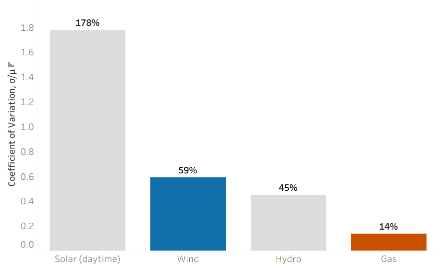
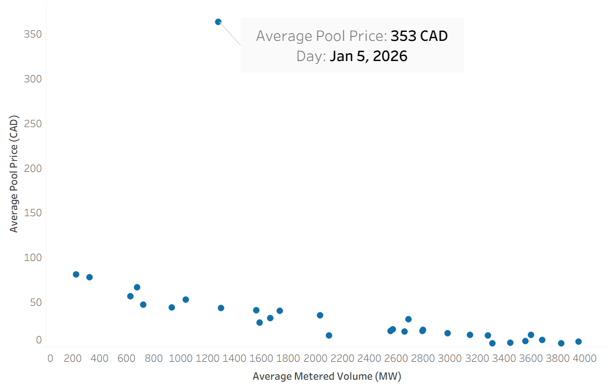

As renewables grow, uniform electricity pricing struggles to reflect real system conditions. Here is what January 2026 data shows.
Alberta operates in an energy-only market, where generators are paid a single uniform price only for power they produce. This design faces new pressures as wind generation grows.
Unlike dispatchable generation, wind produces power on the resource's schedule. In January 2026, wind generation was roughly four times more variable than gas when measured relative to average output. Gas supplies roughly 75% of Alberta's total output and is the most stable relative to its size. Wind, at around 19% of generation, fluctuates more relative to its contribution.

Variability is measured as the standard deviation of hourly output divided by mean generation. Solar and hydro are included for completeness; the primary comparison is between wind and gas, which make up over 94% of Alberta's generation mix.
Wind variability is driven by the nature of the resource itself, while gas variability is largely in response to wind fluctuations, with operators ramping generation up and down to maintain system balance. This dynamic is reflected in the −0.65 correlation between the two.
With wind at near-zero marginal cost, high wind output hours tend to suppress pool prices. As wind generation increases, higher-cost gas generators are forced to sell at low market prices, sometimes below their fixed costs.

Wind is not the only factor influencing prices; demand and weather conditions also play an important role. On January 5th at 11am, the pool price reached $858 CAD/MWh following the cold conditions on January 4th and the return of weekday demand, with wind generation at 353 MW.
| Date | Wind at 11am (MW) | Pool price at 11am (CAD/MWh) | Temperature range |
|---|---|---|---|
| Jan 4 | 261 MW | $52.84 | −31°C to −12°C |
| Jan 5 | 353 MW | $858.44 | −13°C to +2°C |
| Jan 6 | 3,782 MW | $0.00 | −9°C to +1°C |
All figures at 11am MPT. Sunday Jan 4 had low wind but low price. Demand context paired with wind cause complex price signals.
The table shows how volatile prices can be in Alberta's market. Despite cold temperatures and low wind generation on Sunday January 4, prices remained relatively low, likely due to lower weekend demand. The highest pool price of the month was seen on January 5, with similar wind conditions but warmer temperatures than the previous day. By January 6 prices fell to $0.00 as wind generation increased significantly.
This type of volatility was also seen during the January 2024 cold snap, when wind generation was low and pool prices reached the market cap of $999.99/MWh several times.
Gas generators provide essential security when wind drops. In a market where prices are suppressed or spike unpredictably, it becomes difficult to justify building the capacity the system actually needs.
A uniform province-wide price does not always distinguish between cheap power that is useful and cheap power that is overwhelming the system. As renewables grow, more precise pricing is required to reflect conditions across the system.
The Alberta Electric System Operator (AESO) is implementing Locational Marginal Pricing — a pricing model that determines electricity prices based on local supply, demand, and transmission constraints. Under LMP, prices vary by location, allowing the market to reflect congestion and scarcity conditions more accurately. This system could provide clearer signals to both generators and investors about when and where capacity is needed.